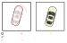

Re:search (3/?)
INTRO (part 2)
Beside the main challenge of understanding the FISST, a second central point of my master thesis is the theory behind the extended objects.The are several different approach to extended object tracking, each of them with their particular strong and weak points. I've decided to follow the approach introduced by [Wolfang Koch] in 2006, and latterly developed by [Marcus Baum] et al. in 2012, where the extension of the tracked object is geometrically represented in terms of a suitable ellipse (in 2-dimensional problems) or a suitable ellipsoid (in 3-dimensional problems).
The reason why I do really like the ellipsoidal approach consists in the fact that the relative ending trackers have three very good properties:
- 1) they have low computational and memory requirements;
- 2) they identifies the principal axes of the object;
- 3) they identifies orientation of the object.
However, in my personal and humble opinion, the trackers suggested by Wolfang Koch and Marcus Baum et al. do not completely exploit the precious information about the orientation of the object. Given this fact, in my thesis I've suggested some adaptation to their approach, which represent my first scientific contribution.
The main drawback of the ellipsoidal approach consists in the underlying theory, namely the [random matrix theory], which is not straightforward at all.
2-dimensional example in bird eye view

An extended object is a physical object that occupies more than a single resolution cell of the sensor employed.
As a result, an extended object can generate multiple detections, usually affected by noise, in the same sampling interval.
The elliptical trackers are able to estimate, in a very efficient way, the position, the orientation and the extension of the tracked object from the set of detections.
The elliptical trackers are able to estimate, in a very efficient way, the position, the orientation and the extension of the tracked object from the set of detections.